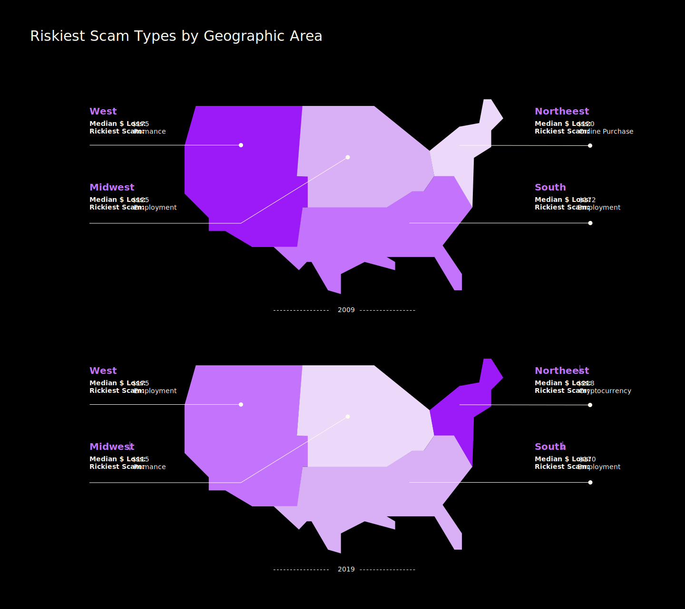
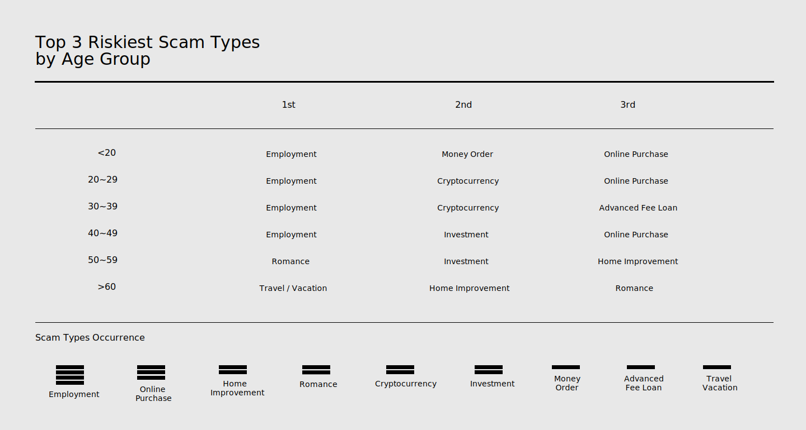

Too Cool To Be Scammed
by Xingwei Huang
While some species are on the track of extinction, there is one ‘species’ thrived as human society is evolving: scam. We are living in the carnival of different scams: cat-fishing, fake charities, the Fyre Festival, romance scams.
This project aims to study how scams have evolved with technology throughout time? What’s the most common types of scam people have fallen for nowadays compare to 10 years ago? What factors can be easily targeted on?
From 2009 to 2019, scammers are constantly envolving...What's different and what has stayed the same?

How about age? Who are more easily to be scammed nowadays?
